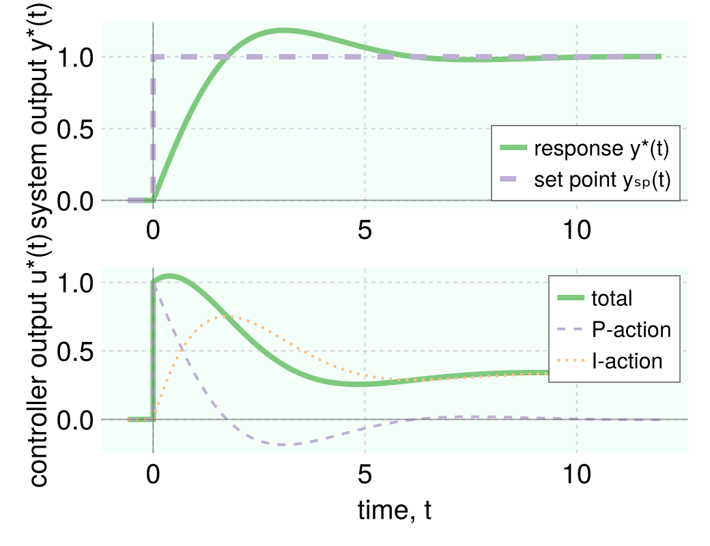
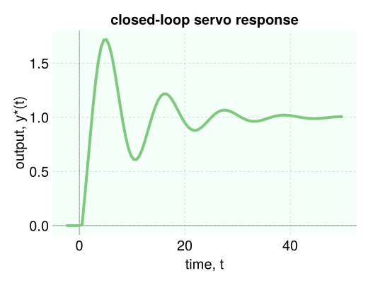

Control systems
we build upon simulate to simulate feedback and feedforward control systems.
P, PI, PID controller transfer functions
we express PID controller transfer functions in the form:
\[g_c(s)=K_c \left[1+\frac{1}{\tau_I}+\tau_D s \frac{1}{\tau_D \alpha s + 1}\right]\]
where $\alpha$ characterizes the derivative filter. this controller function function governs the controller output in response to the input error signal.
To construct P, PI, or PID controllers:
Kc = 2.0 # controller gain
pc = PController(Kc) # P-controller with given Kc
τI = 1.0 # integral time constant
pic = PIController(Kc, τI) # PI-controller with given Kc, τI
τD = 0.1 # derivative time constant
pidc = PIDController(Kc, τI, τD, α=0.0) # PID-controller with given Kc, τI, τD. keyword argument is derivative filter αto construct controller transfer functions $g_c(s)$ from the P, PI, or PID controller parameters:
pic = PIController(2.0, 1.0)
gc = TransferFunction(pic) # (2s+2) / sservo response of a simple control system
with skills in block diagram algebra, we can use simulate to simulate a control system with a great degree of flexibility. as an example, we simulate the response of a simple feedback control system to a set point change.

let's specify $g_c(s)$ as a PI controller and $g_u(s)$ as a first-order system. the former describes the controller output responds to the error signal. the latter describes how the process responds to inputs– here, the process input is provided by the controller.
pic = PIController(1.0, 1.0)
gc = TransferFunction(pic) # controller transfer function
gu = 3 / (4 * s + 1) # process transfer functionvia block diagram algebra, we can solve for the transfer function governing the response to set point changes.
g_ol = gc * gu # open-loop transfer function
g_servo = g_ol / (1 + g_ol) # transfer function for servo responsethe response of the process to a unit step set point change is thus:
Y_sp = 1 / s # unit step set point change
Y = g_servo * Y_sp # resulting output in response to our set point changefinally, we can find the response by inverting Y into the time domain:
final_time = 12.0
data_y = simulate(Y, final_time)to also see the controller output, we build the error signal E and use $g_c(s)=U(s)/E(s)$ to get U.
E = Y_sp - Y # error signal
U = gc * E # resulting controller output
data_u = simulate(U, final_time) # controller output in the time domainan easy way of getting the set point $y_{sp}(t)$ is:
data_y_sp = simulate(Y_sp, final_time)finally, we can plot y, ysp, and u against t to visualize the response of our feedback PI control system to a set point change.

also plotted separately is the contribution to the controller output by the P- and I- components of the PI controller, obtained via:
U_Paction = Kc * E # P-action
U_Iaction = Kc / (τI * s) * E # I-action
data_u_Paction = simulate(U_Paction, final_time)
data_u_Iaction = simulate(U_Iaction, final_time)feedback loops with time delays
when time delays are involved, we must use the special implementation of a transfer function, ClosedLoopTransferFunction. we provide an example below.

suppose the transfer functions in the block diagram are as defined below.
# PI controller transfer function
pic = PIController(1.0, 2.0)
gc = TransferFunction(pic)
# process, sensor dynamics
gu = 2 / (4 * s + 1) * exp(-0.5 * s)
gm = 1 / (s + 1) * exp(-0.75 * s)
gd = 6 / (6 * s + 1)we define the closed-loop transfer functions for the response to set point changes $y_{sp}(t)$ and disturbances $d(t)$ as below:
# open-loop transfer function
g_ol = gc * gu * gm
# closed-loop transfer function for regulator response
gr = ClosedLoopTransferFunction(gd, g_ol)
# closed-loop transfer function for servo response
gs = ClosedLoopTransferFunction(gc * gu, g_ol)where gr and gs represent the closed-loop transfer functions $g_r(s)$ and $g_s(s)$ respectively:
\[g_r(s)=\dfrac{Y(s)}{D(s)}=\dfrac{g_d(s)}{1+g_c(s)g_u(s)g_m(s)}\]
\[g_s(s)=\dfrac{Y(s)}{Y_{sp}(s)}=\dfrac{g_c(s)g_u(s)}{1+g_c(s)g_u(s)g_m(s)}\]
we can then simulate responses to set point changes as:
Ysp = 1 / s # unit step set point change
Y = gs * Ysp
data = simulate(Y, 50.0)
and to disturbances as:
D = 1 / s # unit step in disturbance variable d
Y = gr * D
data = simulate(Y, 50.0)Controlz.PController — Typepc = PController(Kc)Construct a Proportional (P) controller by specifying the controller gain defined under the following transfer function representation:
\[g_c(s)=K_c\]
Arguments
Kc::Float64: controller gain
Example
pc = PController(1.0) # specify P controller gain
gc = TransferFunction(pc) # construct transfer function with this P-controller gainControlz.PIController — Typepic = PIController(Kc, τI)Construct a Proportional-Integral (PI) controller by specifying the controller gain and integral time constant defined under the following transfer function representation:
\[g_c(s)=K_c \left[1+\frac{1}{\tau_I s}\right]\]
Arguments
Kc::Float64: controller gainτI::Float64: integral time constant
Example
pic = PIController(1.0, 3.0) # specify PI controller params
gc = TransferFunction(pic) # construct transfer function with these PI-controller paramsControlz.PIDController — Typepidc = PIDController(Kc, τI, τD, α=0.0)Construct a Proportional-Integral-Derivative (PID) controller by specifying the controller gain, integral time constant, derivative time constant, and derivative filter defined under the following transfer function representation:
\[g_c(s)=K_c \left[1+\frac{1}{\tau_I s}+\tau_D s \frac{1}{\alpha \tau_D s + 1}\right]\]
Arguments
Kc::Float64: controller gainτI::Float64: integral time constantτD::Float64: derivative time constantα::Float64: derivative filter
Example
pidc = PIDController(1.0, 3.0, 0.1) # specify PID controller params
gc = TransferFunction(pidc) # construct transfer function with these PID-controller params